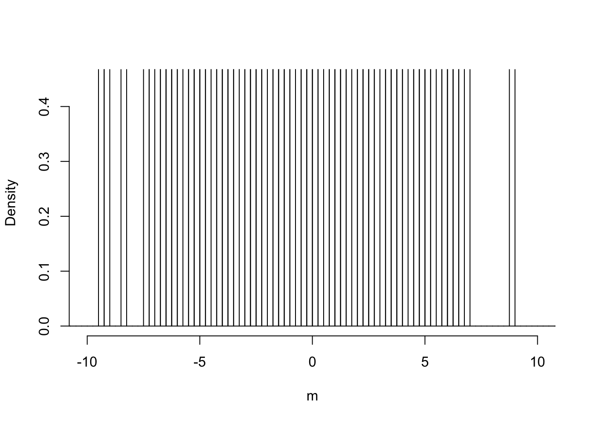
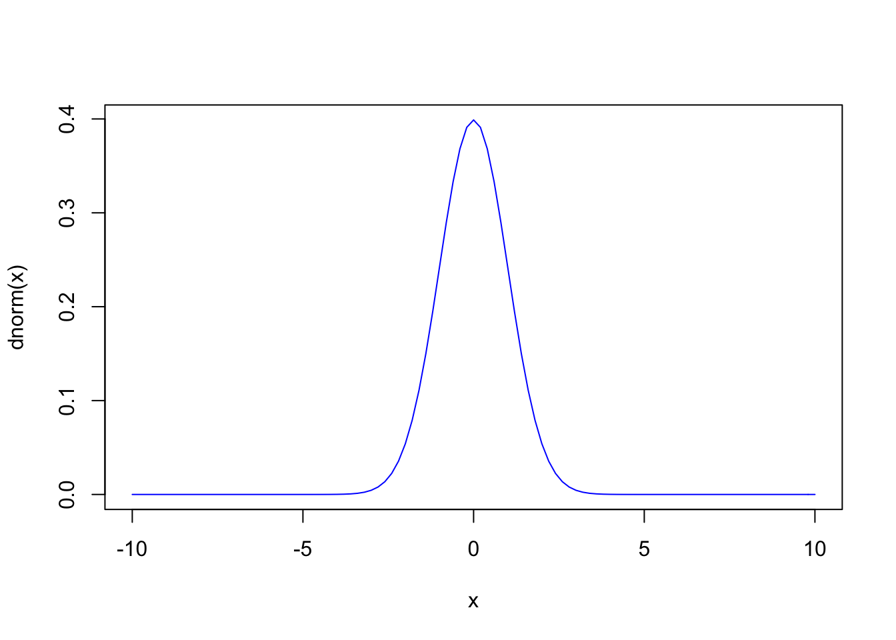
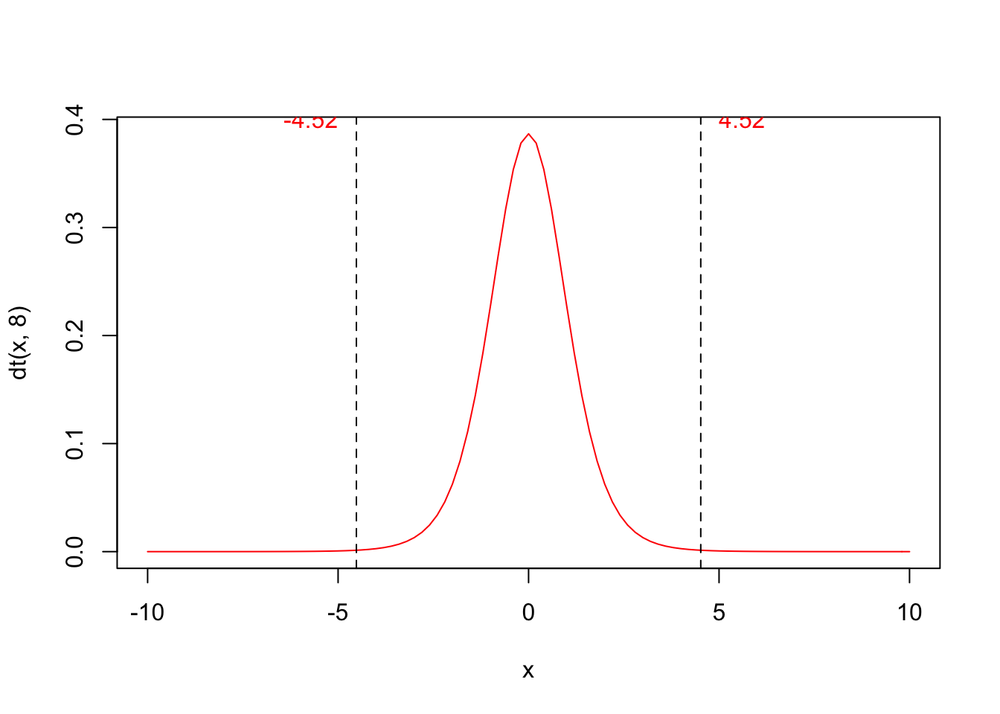

Capitolo 8 Breve introduzione al test d’ipotesi
Abbiamo visto che l’approccio classico all’analisi dei dati è fondamentalmente caratterizzato da due elementi:
- modello di generazione dei dati sperimentali;
- sampling distribution (o sample space o distribuzione campionaria).
La sampling distribution viene utilizzata per l’inferenza statistica (stima per intervallo) e può essere utilizzata analogamente per il test d’ipotesi. A questo proposito, riprendiamo l’esempio utilizzato in precedenza per gli intervalli di confidenza.
8.1 Confronto tra una media osservata e una media teorica
8.1.1 ESEMPIO 1
Abbiamo misurato la concentrazione di una soluzione erbicida tramite un gascromatografo. Facendo l’analisi in triplicato, abbiamo ottenuto i tre valori 109.28, 132.29 e 130.85. La media è 124.14 e la deviazione standard è 12.89. Concludiamo che \(mu\) è uguale a 124.14, con un errore standard (\(s_m\)) pari a 7.44 e un intervallo di confidenza che va da 92.12 a 156.16. Immaginiamo che esista un livello soglia pari a 200 mg/l, al disopra del quale il prodotto diviene tossico per i mammiferi. Dato che non conosciamo il vero valore di \(\mu\) ci chiediamo: è possibile che le nostre tre repliche, nella realtà, provengano da una popolazione che ha media uguale a 200?
In questo caso sappiamo bene che non è possibile, visto che abbiamo generato i dati sperimentali (vedi il capitolo precedente), tramite simulazione Monte Carlo, partendo da una verità vera nota (\(\mu\) = 120 e \(\sigma\) = 12); tuttavia, nella realtà, la domanda è lecita.
In particolare, possiamo calcolare una statistica, che abbiamo già utilizzato per l’intervallo di confidenza, in grado di misurare la discrepanza tra quanto abbiamo osservato e l’ipotesi nulla:
\[ T = \frac{m - 200}{s_m} \]
Il valore da noi osservato è T = (124.14 - 200)/7.44 = -10.196, il che implica un certo grado di discrepanza, altrimenti avremmo dovuto osservare un valore di T più vicino a 0. Possiamo affermare che ciò sia imputabile solo alla variabilità di campionamento e che quindi il nostro esperimento conferma l’ipotesi di partenza (ipotesi nulla)?
Definiamo quindi la nostra ipotesi di lavoro come ipotesi nulla (\(H_0\)):
\[H_0: \mu = 200\]
oppure, che è anche meglio:
\[H_0: T = 0\]
Oltre all’ipotesi nulla, dobbiamo anche definire l’ipotesi alternativa semplice (a ‘due code’), che potrebbe essere:
\[H_1: T \neq 0\]
E’possibile anche definire ipotesi alternative complesse del tipo:
\[H_1: T \leq 0\]
oppure
\[H_1: T \geq 0\]
Bisogna ricordare che le ipotesi debbono essere stabilite prima di effettuare l’esperimento. In questo caso abbiamo fatto un campionamento e abbiamo trovato un valore (124.14) inferiore a quello atteso (200). Che cosa ci attendevamo prima di fare l’esperimento? Un valore diverso da 200, senza poter lecitamente immaginare se sarebbe stato maggiore o minore? In questo caso l’ipotesi alternativa dovrebbe essere la prima (quella semplice). Immaginavamo invece che avrebbe potuto essere inferiore? Allora potremmo utilizzare la prima ipotesi alternativa complessa. In questo caso propendiamo per la prima ipotesi alternativa complessa, cioè \(\mu \leq 200\).
Siamo in totale coerenza con la logica Galileiana: abbiamo un ipotesi di partenza e un esperimento, col quale eventualmente rigettare questa ipotesi. Fisher, negli anni 20 del 1900, propose di utilizzare come ‘forza dell’evidenza scientifica’ la probabilità di ottenere un risultato uguale o più estremo di quello osservato, calcolata supponendo vera l’ipotesi nulla. Si tratta quindi di capire, tramite la definizione di un’apposita ‘sampling distribution’ per T, qual è la proporzione di valori pari o inferiori a -10.196. Dato che la ipotesi alternativa
Per rispondere utilizzeremo la doppia strada: quella empirica (simulazione Monte Carlo) e quella formale.
8.2 Simulazione Monte Carlo
Ci chiediamo: come sarebbe la sampling distribution di T, se \(\mu\) fosse uguale a 200? Possiamo costruirla con una simulazione Monte Carlo, ripetendo molte volte (es. 100’000) l’estrazione di campioni con numerosità pari a 3, da una distribuzione normale con media pari a 200 e deviazione standard pari a 12.89 e calcolando la statistica T. Utilizziamo questo valore di deviazione standard perché è quello osservato nel campione e non abbiamo nessun altra informazione disponibile sulla deviazione standard della popolazione originale. Per eseguire questa operazione utilizziamo il seguente codice R:
set.seed(1234)
result <- rep(0, 100000)
for (i in 1:1000000){
sample <- rnorm(3, 200, 12.888926)
result[i] <- (mean(sample) - 200) / (sd(sample)/sqrt(3))
}In questo modo otteniamo 100’000 valori di T e possiamo calcolare la proporzione di questi che è pari o inferiore al valore da noi osservato (-10.196):
x <- c(109.28, 132.29, 130.85)
Tobs <- (mean(x) - 200)/(sd(x)/sqrt(3))
length(result[result < Tobs])/1000000## [1] 0.004697Eseguendo questa simulazione, otteniamo una proporzione di valori pari a 0.0048. Il risultato si riassume dicendo che il P-level per l’ipotesi nulla è pari a 0.0048. La regola di condotta della statistica tradizionale è quella di rigettare l’ipotesi nulla quando il P-level è inferiore ad una certa soglia prefissata (normalmente P \(\leq\) 0.05). Di conseguenza, concludiamo che vi sono elementi sufficienti per contrastare l’ipotesi che il valore incognito della concentrazione di erbicida sia pari a 200 mg/l.
In altre parole, l’evidenza scientifica è sufficiente buona per il rifiuto dell’ipotesi nulla, anche se esiste una certa probabilità d’errore, pari appunto alla probabilità che l’ipotesi nulla sia vera (P = 0.0048).
8.3 Soluzione formale
Possiamo definire una distribuzione di frequenze per T? Empiricamente possiamo osservare che, analogamente al caso degli intervalli di confidenza, possiamo far riferimento alla distribuzione T di Student.

Distribuzione empirica di T, distribuzione normale standardizzata (blu) e distribuzione t di Student con 2 gradi di libertà
Senza ricorrere alla simulazione Monte Carlo, possiamo quindi risolvere il problema utilizzando la distribuzione t di Student:
pt(-10.194, df=2, lower.tail=T)## [1] 0.9952569dove gli argomenti indicano rispettivamente il valore osservato, i gradi di libertà e la coda della distribuzione di nostro interesse (a noi interessa la coda sinistra, cioè i valori inferiori a quello dato). Il risultato ottenuto è pari a 0.00474, molto simile a quello ottenuto per simulazione.
Allo stesso valore, più semplicemente, si giunge utilizzando la funzione “t.test()”:
t.test(x, mu=200, alternative="less")##
## One Sample t-test
##
## data: x
## t = -10.194, df = 2, p-value = 0.004743
## alternative hypothesis: true mean is less than 200
## 95 percent confidence interval:
## -Inf 145.8694
## sample estimates:
## mean of x
## 124.148.4 Interpretazione del P-level
Quando il P-level è inferiore a 0.05, rifiutiamo l’ipotesi nulla e concludiamo che vi sono elementi sufficienti (prove scientifiche sufficientemente forti) per rifiutare la nostra ipotesi di partenza.
Bisogna sottolineare come il P-level nella statistica tradizionale sia stato inizialmente proposto da Fisher come criterio di comportamento e non come un vero e proprio criterio inferenziale-probabilistico. Successivamente, Jarzy Neyman ed Egon Pearson, intorno al 1930, proposero di utilizzare il P-level come probabilità di errore di I specie, cioè come probabilità di rifiutare erroneamente l’ipotesi nulla. Tuttavia, trattandosi di una probabilità calcolata a partire da una sampling distribution, cioè da un’ipotetica infinita ripetizione dell’esperimento, essa non ha alcun valore in relazione al singolo esperimento effettivamente eseguito, come i due autori menzionati in precedenza hanno esplicitamente chiarito.
Di conseguenza, nel caso in esempio, affermare che abbiamo una probabilità di errore pari a 0.00474 nel rifiutare l’ipotesi nulla, rappresenterebbe un abuso: le nostre conclusioni potrebbero essere false o vere, ma non abbiamo alcun elemento per scegliere tra le due opzioni. Possiamo solo affermare che, se ripetessimo infinite volte l’esperimento e se l’ipotesi nulla fosse vera, otterremmo un risultato estremo come il nostro o più estremo solo in 4.74 casi (circa) su 1000. In altre parole, nel lungo periodo, basando le nostre conclusioni sul criterio anzidetto (rifiuto l’ipotesi nulla se il P-value è inferiore a 0.05) commettiamo un errore in non più del 5% dei casi. Insomma, il P-value non può essere guardato come la probabilità di ‘falso-positivo’ ad ogni singolo test, ma solo nel lunghissimo periodo.
8.5 Confronto tra due medie: il test t di Student
Analizziamo un primo esempio pratico di test d’ipotesi: nella sperimentazione agraria si ha spesso interesse a considerare due popolazioni per scoprire se queste sono diverse per il carattere o i caratteri considerati. Più in particolare, siccome ognuna delle popolazioni sarà descritta dalla sua media, saremo interessati a rispondere al quesito se l’eventuale differenza rilevata tra le due medie è da ritenersi una differenza reale, effettiva e con un preciso significato biologico. In sostanza, in termini statistici, dovremo stabilire se la differenza tra le medie è significativa oppure da attribuire a fattori casuali e quindi non significativa.
Anche se il problema può sembrare banale, esso non lo è; basti ripensare al fatto che ogni media stimata si porta dietro un alone di incertezza, definito appunto dall’intervallo di confidenza.
8.5.1 ESEMPIO 2
Un ricercatore ha scelto casualmente dieci piante da una popolazione; ne ha trattate cinque con l’erbicida A e cinque con un placebo (P). Alla fine dell’esperimento ha determinato il peso di ognuna delle dieci piante. E’ evidente che le piante oggetto dell’esperimento sono solo un campione di quelle possibili, così come è evidente che il peso, come ogni altra variabile biologica è soggetto ad una certa variabilità naturale, legata sia a questioni genotipiche che fenotipiche, oltre che ad eventuali errori casuali di misura.
I risultati sono i seguenti:
A (peso in g): 65 - 68 - 69 - 71 - 78; la media è pari a 70.2, mentre la deviazione standard è pari a 4.87. L’errore standard che è pari a 2.18 e quindi l’intervallo di confidenza della media è 70.2 \(\pm\) 6.04
P (peso in g): 80 - 81 - 84 - 88 - 94; la media è 85.4, mentre la deviazione standard è pari a 5.72. L’errore standard è pari a 2.56, mentre l’intervallo di confidenza per la media è 85.4 \(\pm\) 7.11
Possiamo affermare che A riduce il peso delle piante trattate, coerentemente con le aspettative riguardo ad una molecola erbicida? Nel rispondere a questa domanda bisogna tener presente che i campioni sono totalmente irrilevanti, dato che il nostro interesse è rivolto alle popolazioni che hanno generato i campioni. Vogliamo cioè che le nostre conclusioni abbiano carattere di universalità e non siano specifiche a quanto abbiamo osservato nel nostro esperimento. Intanto possiamo notare che il limite di confidenza superiore per A (70.2 + 6.04 = 76.24) è inferiore al limite di confidenza inferiore per P (75.4 - 7.11 = 68.29). Questo non è un criterio sul quale basare le nostre considerazioni, ma è comunque un segno che le popolazioni da cui provengono i due campioni potrebbero essere diverse.
Per trovare un criterio decisionali più rigoroso, possiamo formulare l’ipotesi nulla in questi termini:
\[H_0: \mu_1 = \mu_2 = \mu\]
In altre parole, la nostra ipotesi di lavoro è che i due campioni siano in realtà estratti da due distribuzioni normali con la stessa media e la stessa deviazione standard, il che equivale a dire che i due campioni provengono da un unica distribuzione normale con media \(\mu\) e deviazione standard \(\sigma\).
L’ipotesi alternativa semplice può essere definita:
\[H_1 :\mu_1 \ne \mu_2\]
Se abbiamo elementi sufficienti, possiamo anche adottare ipotesi alternative complesse, del tipo
\[H_1 :\mu _1 > \mu _2\]
oppure:
\[H_1 :\mu _1 < \mu _2\]
anche se queste ipotesi alternative debbono essere ragionevolmente fatte prima di eseguire l’esperimento, non dopo averne visto i risultati.
Quale statistica potrebbe meglio descrivere l’andamento dell’esperimento, in relazione all’ipotesi nulla? E’ evidente che questa statistica dovrebbe essere basata su due indicatori diversi:
- l’entità della differenza tra le medie: più la differenza tra le due medie è alta e più è probabile che essa sia significativa;
- l’entità dell’errore standard. Più è elevata la variabilità dei dati (e quindi l’errore di stima) più è bassa la probabilità che le differenze osservate tra le medie siano significative.
Su queste basi, si può individuare la seguente statistica:
\[T = \frac{m_1 - m_2}{SED}\]
Si può osservare che T, in realtà, non è altro che il rapporto tra le quantità indicate in precedenza ai punti 1 e 2: infatti la quantità al numeratore è la differenza tra le medie dei due campioni, mentre la quantità al denominatore è il cosiddetto errore standard della differenza tra due medie (SED). Quest’ultima quantità si può ottenere pensando che i due campioni sono estratti in modo indipendente e, pertanto, la varianza della somma (algebrica) è uguale alla somma delle varianze. La varianza delle due medie è data dal quadrato delle loro deviazioni standard, cioè dal quadrato degli errori standard. Pertanto:
\[SED^2 = SEM_1^2 + SEM_2^2\]
Sappiamo anche che il SEM si ottiene dividendo la deviazione standard di ogni campione per la radice quadrata del numero dei dati, quindi:
\[SED^2 = \frac{s_1^2}{n_1} + \frac{s_2^2}{n_2}\]
cioè:
\[SED = \sqrt{ \frac{s_1^2}{n_1} + \frac{s_2^2}{n_2} }\]
Possiamo anche scrivere:
\[SED = \sqrt{ \frac{s_1^2 \, n_2 + s_2^2 \, n_1}{n_1 \, n_2} }\]
e, se le varianze sono uguali (\(s_1^2 = s_2^2 = s^2\)), segue che:
\[SED = \sqrt {s^2 \frac{n_1 + n_2}{n_1 \, n_2 } }\]
Se fosse anche \(n_1 = n_2 =n\), potremmo scrivere:
\[SED = \sqrt{2 \, \frac{s^2}{n} } = \sqrt{2} \times SEM\]
Il valore osservato per T è quindi uguale a:
\[T = \frac{85.4 - 70.2}{3.361547} = 4.5217\]
dove il denominatore è ottenuto come:
\[SED = \sqrt{ 2.18^2 + 2.56^2 } = 3.361547\]
A questo punto avendo osservato T = 4.5217, possiamo chiederci qual è la ‘sampling distribution’ per T, cioè quali valori potrebbe assumere questa statistica se ripetessimo il campionamento infinite volte, assumendo che l’ipotesi nulla fosse vera.
La sampling distribution per T potrebbe essere ottenuta empiricamente, utilizzando una simulazione MONTE CARLO ed immaginando di estrarre numerose coppie di campioni, dalla stessa distribuzione normale, analogamente a quanto abbiamo fatto nell’esempio precedente. Se l’ipotesi nulla è vera, possiamo immaginare che questa distribuzione gaussiana abbia una media pari a (70.2 + 85.4)/2 = 77.8 e una deviazione standard pari alla deviazione standard delle dieci osservazioni (tutte insieme, senza distinzioni di trattamento), cioè 5.71.
Il codice da utilizzare in R per le simulazioni è il seguente:
victo <- c(65, 68, 69, 71, 78)
lucrezia <- c(80, 81, 84, 88, 94)
media <- mean(c(victo, lucrezia))
devSt <- sd(c(victo, lucrezia))
set.seed(1234)
result <- rep(0, 100000)
for (i in 1:100000){
sample1 <- rnorm(5, media, devSt)
sample2 <- rnorm(5, media, devSt)
SED <- sqrt( (sd(sample1)/sqrt(5))^2 +
(sd(sample2)/sqrt(5))^2 )
result[i] <- (mean(sample1) - mean(sample2)) / SED
}I risultati delle 100’000 simulazioni sono riportati nel grafico sottostante. Possiamo notare che, dei 100’000 valori di T osservati assumendo vera l’ipotesi nulla, solo l’un per mille sono superiori a quello da noi osservato e altrettanti sono inferiori a -4.5217. In totale, la probabilità di osservare un valore di T così alto in valore assoluto e dello 0.21 %.
SED_obs <- sqrt( (sd(victo)/sqrt(5))^2 +
(sd(lucrezia)/sqrt(5))^2 )
T_obs <- (mean(victo) - mean(lucrezia))/SED_obs
(length(result[result < T_obs]) +
length(result[result > - T_obs])) /100000## [1] 0.00164#Codice Grafico
b <- seq(-12, 12, by=0.25)
hist(result, breaks = b, freq=F, xlab = expression(paste(m)), ylab="Density", xlim=c(-10,10), ylim=c(0,0.45), main="")
curve(dnorm(x), add=T, col="blue")
curve(dt(x, 8), add=T, col="red")
abline(v = 4.52, lty = 2)
abline(v = -4.52, lty = 2)
text(5, 0.4, label="4.52", adj=0, col = "red")
text(-5, 0.4, label="-4.52", adj=1, col = "red")
In modo più formale, sempre analogamente all’esempio precedente, si può dimostrare che la sampling distribution per T è costituita dalla distribuzione t di Student, con 8 gradi di libertà (quattro per campione). A questo punto siamo in grado di calcolare la probabilità di ottenere valori di T altrettanto estremi o più estremi di quello da noi osservato, tenendo però presente che il test è ‘a due code’, nel senso che dobbiamo considerare T osservato e il suo reciproco, che avremmo ottenuto se avessimo cambiato il senso della differenza (\(m_2 - m_1\) invece che \(m_1 - m_2\)). In altre parole ci chiediamo qual è la possibilità di campionare valori esterni all’intervallo (-4.5217; 4.5217).
Possiamo ottenere questa informazione utilizzando la funzione:
2 * pt(T_obs, 8, lower.tail=T)## [1] 1.998055Abbiamo moltiplicato per 2 il risultato, in quanto la funzione ‘dt()’ fornisce la probabilità di trovare individui inferiori a -4.5217 (‘lower.tail = T’), che, essendo la distribuzione simmetrica, è esattamente uguale alla probabilità di trovare soggetti superiori a 4.5217.
Vediamo che il P-level è minore di 0.05 e possiamo quindi rifiutare l’ipotesi nulla. Concludiamo che vi è un’evidenza scientifica abbastanza forte per ritenere che l’erbicida A induca una riduzione del peso delle piante trattate.
Allo stesso valore, più semplicemente, si perviene utilizzando la funzione:
t.test(victo, lucrezia, var.equal=T)##
## Two Sample t-test
##
## data: victo and lucrezia
## t = -4.5217, df = 8, p-value = 0.001945
## alternative hypothesis: true difference in means is not equal to 0
## 95 percent confidence interval:
## -22.951742 -7.448258
## sample estimates:
## mean of x mean of y
## 70.2 85.4Gli argomenti della funzione ‘t.test()’ sono i due vettori è l’argomento ‘var.equal’, che in questo caso è stato settato su TRUE. Per comprendere il significato di quest’ultimo argomento dobbiamo vedere quali sono le tipologie di t test possibili.
8.6 Approfondimento: tipologie alternative di test t
Il test t può essere di tre tipi:
- Appaiato. In questo caso le misure sono prese a coppia sullo stesso soggetto e non sono quindi indipendenti.
- Omoscedastico. Le misure sono prese su soggetti diversi (indipendenti) e possiamo suppore che i due campioni provengano da due popolazioni con la stessa varianza.
- Eteroscedastico. Le misure sono prese su soggetti diversi, ma le varianze non sono omogenee.
Nel nostro esempio vediamo che le varianze dei campioni sono piuttosto simili e quindi adottiamo un test t omoscedastico (‘var.equal = T’).
Se dovessimo supporre che i due campioni provengono da popolazioni con varianze diverse, allora si porrebbe il problema di stabilire il numero di gradi di libertà del SEM. Abbiamo visto che se le varianze dei due campioni sono uguali (o meglio, sono due stime della stessa varianza), la varianza della somma/differenza ha un ha un numero di gradi di libertà pari alla somma dei gradi di libertà delle due varianze. Se le varianze fossero diverse, il numero di gradi di libertà della loro combinazione lineare (somma o differenza) si dovrebbe approssimare con la formula di Satterthwaite:
\[DF_s \simeq \frac{ \left( s^2_1 + s^2_2 \right)^2 }{ \frac{(s^2_1)^2}{DF_1} + \frac{(s^2_2)^2}{DF_2} }\]
Vediamo che se le varianze e i gradi di libertà sono uguali, la formula precedente riduce a:
\[DF_s = 2 \times DF\]
Nel nostro caso, se fosse \(s^2_1 \neq s^2_2\) avremmo un numero frazionario di gradi di libertà:
dfS <- (var(victo) + var(lucrezia))^2 /
((var(victo)^2)/4 + (var(lucrezia)^2)/4)
dfS## [1] 7.79772Il risultato può essere riscontrato con:
t.test(victo, lucrezia, var.equal=F)##
## Welch Two Sample t-test
##
## data: victo and lucrezia
## t = -4.5217, df = 7.7977, p-value = 0.002076
## alternative hypothesis: true difference in means is not equal to 0
## 95 percent confidence interval:
## -22.986884 -7.413116
## sample estimates:
## mean of x mean of y
## 70.2 85.4Se invece avessimo rilevato le misure accoppiate su quattro individui avremmo solo 4 gradi di libertà:
t.test(victo, lucrezia, var.equal=T, paired=T)##
## Paired t-test
##
## data: victo and lucrezia
## t = -22.915, df = 4, p-value = 2.149e-05
## alternative hypothesis: true difference in means is not equal to 0
## 95 percent confidence interval:
## -17.04169 -13.35831
## sample estimates:
## mean of the differences
## -15.28.7 Confronto tra due proporzioni
Il test di t è molto utile, ma soltanto nel caso in cui si abbia a che fare con caratteri quantitativi, cioè con variabili misurate su una scala continua, per le quali sia possibile calcolare delle statistiche descrittive, come appunto la media.
In molti casi, gli sperimentatori sono interessati a rilevare alcune caratteristiche qualitative, come ad esempio lo stato di una pianta in seguito ad un trattamento (morta o viva), il colore dei semi (si ricordino i piselli verdi e gialli di Mendel) ed altre caratteristiche che non sono misurabili facilmente su una scala continua.
Avendo a che fare con variabili qualitative l’unico dato che si può rilevare è la proporzione degli individui che presentano le diverse modalità. Proviamo ad osservare il seguente esempio.
8.7.1 ESEMPIO 3
Immaginiamo di voler verificare se un coadiuvante aumenta l’efficacia di un erbicida organizziamo un esperimento in cui utilizziamo l’erbicida da solo e con il coadiuvante. Nel primo caso (erbicida da solo) otteniamo 56 morti su 75 piante trattate, mentre nel secondo caso otteniamo 48 morti su 50 piante trattate.
I risultati del nostro esperimento si riducono ad una tabella di contingenza di questo tipo:
counts <- c(56, 19, 48, 2)
tab <- matrix(counts, 2, 2, byrow = T)
row.names(tab) <- c("E", "EC")
colnames(tab) <- c("M", "V")
tab## M V
## E 56 19
## EC 48 2Abbiamo già visto nel capitolo sulla statistica descrittiva come è possibile costruire un indice di connessione (detto \(\chi^2\)) che misura la quantità del ‘legame’ tra le due variabili rilevate (trattamento e mortalità). Ci stiamo infatti chiedendo se il numero dei morti è indipendente dal tipo di trattamento oppure no.
Sappiamo già come calcolare il \(\chi^2\) con R:
summary( as.table(tab) )## Number of cases in table: 125
## Number of factors: 2
## Test for independence of all factors:
## Chisq = 9.768, df = 1, p-value = 0.001776Il valore osservato è pari a 9.768. Siccome siamo in ambito inferenziale, dobbiamo ricordare che non ci interessa il confronto tra proporzioni osservate nel caso in studio, ma ci interessa il confronto delle proporzioni delle popolazione da cui i due campioni (uno di 75 l’altro di 50 individui) sono stati estratti. Di conseguenza, è possibile che, pur essendo vera l’ipotesi nulla, noi abbiamo ottenuto un valore maggiore di zero per effetto del campionamento e dell’errore sperimentale, cioè per il solo effetto del caso. Ma quanto è probabile questa evenienza?
Poniamo l’ipotesi nulla in questi termini:
\[H_o :\pi_1 = \pi_2 = \pi\]
Ci chiediamo: se l’ipotesi nulla è vera (\(\pi_1 = \pi_2\)), qual è la sampling distribution per \(\chi^2\)? E’possibile simulare questo esperimento immaginando di campionare da una distribuzione binomiale con \(\pi\) = 0.832 il numero di successi su 75 esperimenti (che corrisponde alla prima cella in alto a sinistra della tabella di contingenza precedente). Per differenza con i totali marginali possiamo poi dedurre le altre tre frequenze e calcolare il valore di \(\chi^2\).
La simulazione di un test di \(\chi^2\) può esser fatta utilizzando la funzione ‘r2dtable()’ che produce il numero voluto di tabelle di contingenza, con righe e colonne indipendenti r rispettando i totali marginali voluti. Le tabelle prodotte (nel nostro caso 10’000) sono restituite come lista, quindi possiamo utilizzare la funzione ‘lapply()’ per applicare ad ogni elemento della lista la funzione che restituisce il \(\chi^2\) (‘chiSim’).
chiSim <- function(x) summary(as.table(x))$stat
set.seed(1234)
tabs <- r2dtable(10000, apply(tab, 1, sum), apply(tab, 2, sum))
chiVals <- as.numeric( lapply( tabs, chiSim) )
length(chiVals[chiVals > 9.768])## [1] 22Vediamo che vi sono 19 valori più alti di quello da noi osservato (p = 0.0019).
In modo formale, si può dimostrare che, se \(n\) è sufficientemente grande (n > 30), il valore osservato di \(\chi^2\) segue appunto la distribuzione della variabile casuale \(\chi^2\), con un numero di gradi di libertà \(\nu\) pari al numero dei confronti (in questo caso 1). Possiamo quindi utilizzare questa variabile casuale per calcolare la probabilità di ottenere valori pari o superiori a 9.768:
pchisq(9.76801, 1, lower.tail=F)## [1] 0.001775746Allo stesso risultato, ma in modo più semplice, è possibile pervenire utilizzando la già vista funnzione ‘summary()’ applicata alla tabella di contingenza (vedi sopra), oppure:
chisq.test(tab, correct=F)##
## Pearson's Chi-squared test
##
## data: tab
## X-squared = 9.768, df = 1, p-value = 0.0017768.8 Conclusioni
Abbiamo visto quale strumento abbiamo a disposizione per tirare conclusioni in presenza di incertezza sperimentale. Dovrebbe essere evidente che anche le nostre conclusioni sono incerte, in quanto soggette all’errore di campionamento. In particolare, abbiamo visto che esiste un rischio di errore di prima specie, cioè rifiutare erronamente l’ipotesi nulla (falso positivo). Allo stesso modo, esiste anche un rischio di errore di II specie, cioè accettare erroneamente l’ipotesi nulla (falso negativo). Dei due errori parleremo in una dispensa specifica.
8.9 Riepilogo
Lo schema di lavoro, nel test d’ipotesi, è il seguente:
- Si formula l’ipotesi nulla;
- Si individua una statistica che descriva l’andamento dell’esperimento, in relazione all’ipotesi nulla;
- Si individua la sampling distribution per questa statistica, assumendo vera l’ipotesi nulla; la sampling distribution può essere empirica (ottenuta per simulazione) o teorica, scelta in base a considerazioni probabilistiche
- Si calcola la probabilità che, essendo vera l’ipotesi nulla, si possa osservare una valore altrettanto estremo o più estremo di quello calcolato, per la statistica di riferimento;
- Se il livello di probabilità è inferiore ad una certa soglia \(\alpha\) prefissata (generalmente 0.05), si rifiuta l’ipotesi nulla.